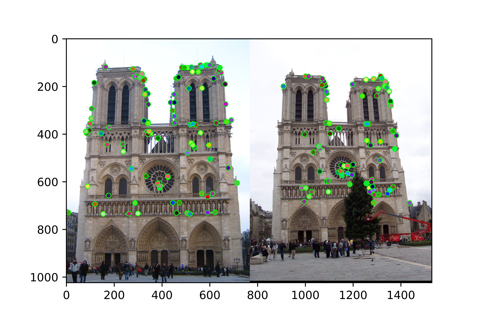

In this project, we need to implement a simplified version of a classic computer vision algorithm called SIFT (Scale-invariant feature transform). At the beginning, we implement the Harris corner detector which uses gradients along x and y directions as well as Gaussian filter to compute cornorness scores for each point in the image, then we threshold the image and apply the non-maximum suppression. This part is implemented in get_interest_points.m. The way I do non-maximum suppression is to apply a maximum filter at each pixel and then compare it with the original image, only keep those pixels that have the same value in the original image. In that case, we only keep pointer that are local maximum within selected windows size. The second step is to compute the local features for a given interesting points. The feature we used a histogram of sum of magnitudes of gradients over angels for a selected window size. This feature is very good indicator to tell if two pixels match in two different images. The part is implemented in student_harris.py and student_sift.py. Finally, a match function that computes matched features is implemented in student_feature_matching.py. We use Euclid distance to denote the distance between two features.
Mainly, I finish three functions shown below. My implementation is just the baseline implementation, which is unable to match points between images which differ drasticall1 in scale and lighting. I will illustrate each section in details.
I_x = cv2.Sobel(image, -1, 1, 0)
I_y = cv2.Sobel(image, -1, 0, 1)
Ixx = ndi.gaussian_filter(I_x**2, sigma=1)
Ixy = ndi.gaussian_filter(I_y*I_x, sigma=1)
Iyy = ndi.gaussian_filter(I_y**2, sigma=1)
k = 0.04
thresh = 0.07
N = 1500
detA = Ixx * Iyy - Ixy ** 2
traceA = Ixx + Iyy
harris_response = detA - k * traceA ** 2
cornelList = []
avg = np.mean(harris_response[harris_response > 0])
new_thresh = thresh * avg
localMaximum = ndi.rank_filter(harris_response, rank=-1, size=(6, 6))
print(harris_response.shape, localMaximum.shape)
for row, response in enumerate(harris_response):
for col, r in enumerate(response):
if r > thresh and r == localMaximum[row, col]:
cornelList.append([col, row, r]) # x, y, r
cornelList = np.array(cornelList)
x = cornelList[0:N, 0]
y = cornelList[0:N, 1]
return x, y, confidences, scales, orientations
This step of the image processing pipeline is the construction of a feature at each interest point. A feature is a set of distinguished information about a point in the image. In this project, a feature takes the form of a 128-dimentional vector representing a series of gradient histogram computed in the neighborhood of each interest point.
For each interest point. I calculate the eight gradient at each pixel in its neighborhood and throw it into a series of histograms. Initially, I try to use a gradient weighted matrix but the results fall compared with no using gaussian weights. So I just use the original value of the gradient.
assert image.ndim == 2, 'Image must be grayscale'
fv = np.zeros((128))
px, py, nx, ny = 0, 1, 2, 3
pxpy, pxny, nxpy, nxny = 4, 5, 6, 7
pad_r, pad_c = 8, 8
kernel = cv2.getGaussianKernel(16, 1)
G = kernel * kernel.T
assert len(x) == len(y), "Imbalanced location values"
for i in range(0, len(x)):
x[i], y[i] = int(np.round(x[i])), int(np.round(y[i]))
row1, row2 = int(x[i]-pad_r), int(x[i]+pad_r)
col1, col2 = int(y[i]-pad_c), int(y[i]+pad_c)
if row1 >= 0 and row2 <= image.shape[0] and col1 >= 0 and col2 <= image.shape[1]:
temp_cell = image[row1:row2, col1:col2]
H_keypoint = np.zeros((8))
for j in range(0, 4):
indexj = j * 4
for k in range(0, 4):
histogram = np.zeros((8))
indexx = k * 4
temp = temp_cell[indexj:indexj+4, indexx:indexx+4]
temp_gaussian = G[indexj:indexj+4, indexx:indexx+4]
[y_gradient, x_gradient] = np.gradient(temp, edge_order=2)
diag_gradient = np.sqrt(x_gradient * x_gradient + y_gradient * y_gradient)
for g in range(0, temp.shape[0]):
for h in range(0, temp.shape[1]):
if x_gradient[g, h] >= 0 and y_gradient[g, h] >= 0:
# print(py, g, h, histogram.shape, x_gradient.shape)
histogram[py] += y_gradient[g, h]
histogram[px] += x_gradient[g, h]
histogram[pxpy] += diag_gradient[g, h]
elif x_gradient[g, h] >= 0 and y_gradient[g, h] < 0:
histogram[ny] += y_gradient[g, h]
histogram[px] += x_gradient[g, h]
histogram[pxny] += diag_gradient[g, h]
elif x_gradient[g, h] < 0 and y_gradient[g, h] >= 0:
histogram[py] += y_gradient[g, h]
histogram[nx] += x_gradient[g, h]
histogram[nxpy] += diag_gradient[g, h]
else:
histogram[ny] += y_gradient[g, h]
histogram[nx] += x_gradient[g, h]
histogram[nxny] += diag_gradient[g, h]
H_keypoint = np.hstack((H_keypoint, histogram))
H_keypoint = H_keypoint[8:]
fv = np.vstack((fv, H_keypoint))
fv = fv[1:, :]
fv = np.delete(fv,np.where(np.isnan(fv))[0],axis=0)
fv_norm = np.linalg.norm(fv)
np.seterr(invalid='ignore')
fv = np.true_divide(fv, fv_norm)
return fv
The last step is feature matching. I use a simple ratio of Euclidean distances to decide which points match. I use the formula mentioned in the textbook, thresholding on the ratio between the distance from a point's nearest neighbor to its second-nearest neighbor.
thresh = 0.95
distantMat = cdist(features1, features2, metric='euclidean')
index = np.argsort(distantMat, axis=1)
for i in range(distantMat.shape[0]):
distantMat[i] = distantMat[i, distantMat[i].argsort()]
inverseConfidences = np.true_divide(distantMat[:, 0], distantMat[:, 1])
confidences = np.true_divide(1., inverseConfidences[inverseConfidences < thresh])
matches = np.empty((confidences.shape[0], 2), dtype=int)
matches[:, 0] = np.where(inverseConfidences < thresh)[0]
matches[:, 1] = index[inverseConfidences < thresh, 0]
matchIndex = np.argsort(confidences)[::-1]
matches = matches[matchIndex, :]
print(matches.shape, confidences.shape)
return matches, confidences
|  |
The algorithm happens to pretty poorly on the given data, which might because my realization contains few bells & whistles that could be used for increasing accuracy. Many poor matches are pretty out of line. Many of them leap between the part where there is no geomatric verification going on.
One important improvement about accuracy is about the change of using different types of normalization. When I use normalization in a certain axis, the accuracy is nearly zero. But when I change it to the whole feature matrix, it improves to approximate 20%. But using gaussian weighted matrix seems do not help to the acuuracy improvement.
About this project, I think I still need to do more to adjust and improve the accuracy, for example trying some different matching or finding algorithms.